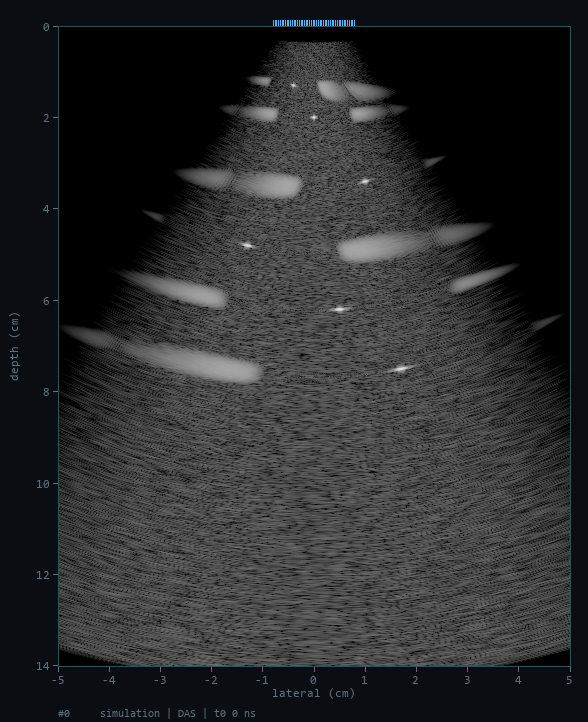
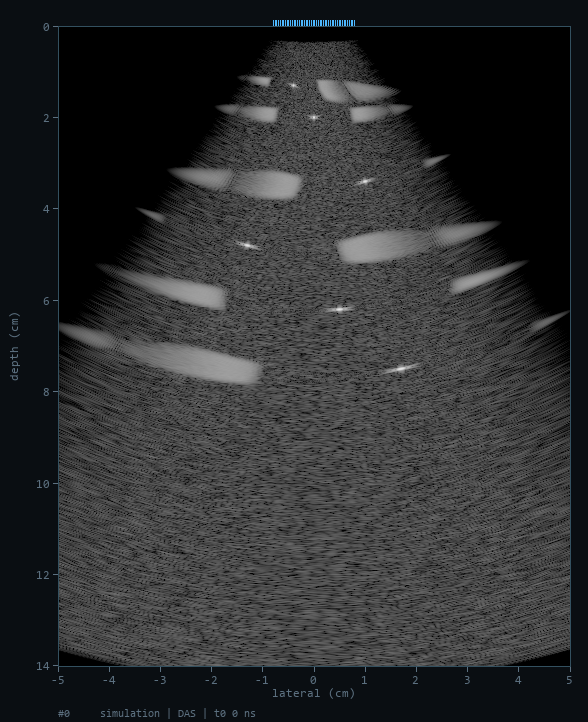
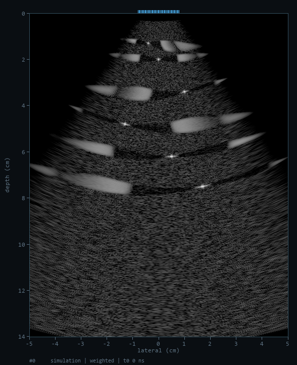
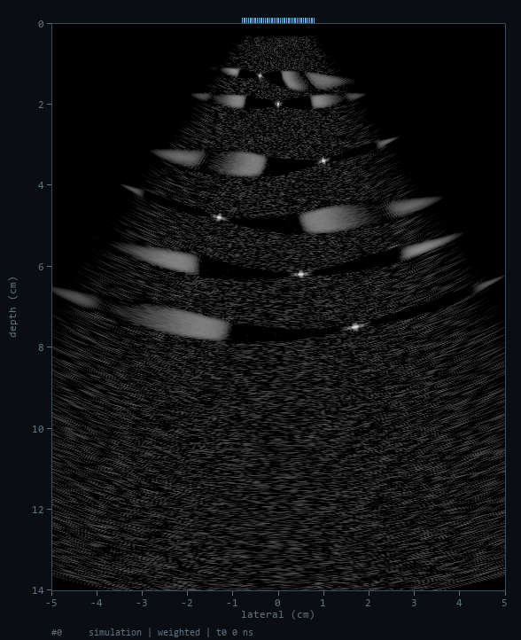
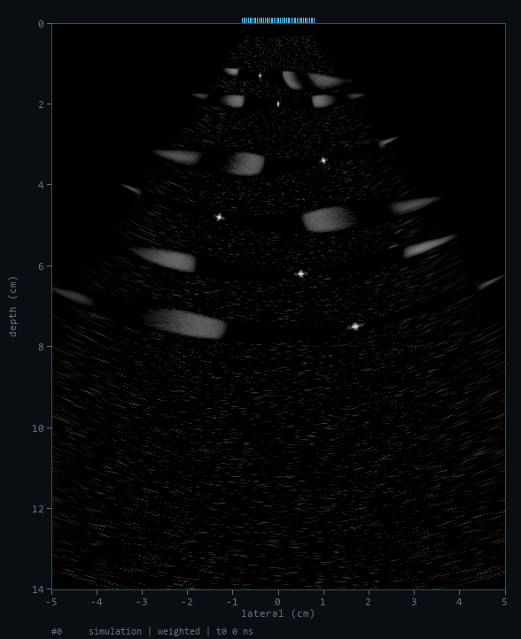
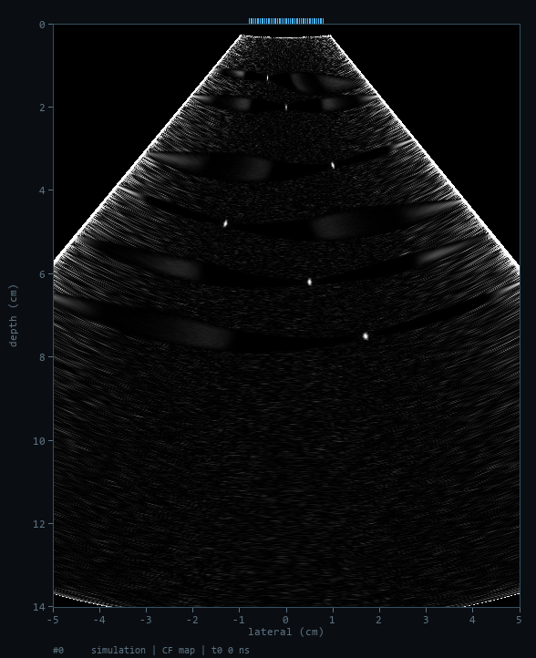

SIMULATION REHEARSAL ONLY. A candidate improved the declared wire score on separate frames; test another target position next. This is not evidence of improvement on the physical probe.
Scores use linear ordinary-DAS data with fixed physical regions. Lower is preferred; candidates losing more than half the normalized reflector peak, increasing clutter p95 by over 3 dB, or increasing clutter energy ratio by over 50% are rejected. Coherence-weighted images are comparisons only. A wire cannot establish tissue texture quality.






| Trial | Score | Lateral −6 dB mm | Axial −6 dB mm | Clutter p95 dB | Normalized peak |
|---|---|---|---|---|---|
| display-reference | unresolved | 1.136 | 0.362 | -40.4 | 0.1818 |
| baseline | 0.000 | 1.136 | 0.362 | -40.4 | 0.1818 |
| t0-0 | 0.071 | 1.160 | 0.424 | -39.2 | 0.1645 |
| t0-1 | 0.063 | 1.128 | 0.444 | -39.2 | 0.1617 |
| t0-2 | 0.000 | 1.136 | 0.362 | -40.4 | 0.1818 |
| t0-3 | 0.037 | 1.135 | 0.399 | -40.1 | 0.1758 |
| t0-4 | 0.116 | 1.131 | 0.463 | -38.8 | 0.1458 |
| t0-5 | 0.015 | 1.132 | 0.360 | -40.9 | 0.1780 |
| band-0 | unresolved | 1.485 | 0.753 | -31.8 | 0.0425 |
| band-1 | 0.188 | 1.267 | 0.546 | -37.8 | 0.1105 |
| band-2 | unresolved | 1.340 | 0.649 | -37.4 | 0.0810 |
| band-3 | 0.000 | 1.189 | 0.440 | -40.1 | 0.1522 |
| band-4 | 0.024 | 1.237 | 0.539 | -41.2 | 0.1248 |
| band-5 | 0.000 | 1.136 | 0.362 | -40.4 | 0.1818 |
| apod-0 | unresolved | 0.735 | 0.364 | -33.4 | 0.1815 |
| apod-1 | -0.132 | 0.956 | 0.363 | -39.8 | 0.1815 |
| apod-2 | -0.034 | 1.078 | 0.362 | -40.2 | 0.1820 |
| apod-3 | 0.038 | 1.217 | 0.361 | -40.8 | 0.1794 |
| matched-0 | -0.132 | 0.956 | 0.363 | -39.8 | 0.1815 |
| matched-1 | unresolved | 1.018 | 0.512 | -39.2 | 0.0517 |
| validation-0-baseline | unresolved | 1.135 | 0.362 | -40.5 | 0.1816 |
| validation-0-candidate | unresolved | 0.955 | 0.363 | -40.1 | 0.1814 |
| validation-1-baseline | unresolved | 1.135 | 0.361 | -40.5 | 0.1820 |
| validation-1-candidate | unresolved | 0.955 | 0.363 | -39.9 | 0.1817 |
| display-cf-0.25 | unresolved | 0.804 | 0.363 | -46.1 | 0.1813 |
| display-cf-0.5 | unresolved | 0.705 | 0.363 | -52.0 | 0.1812 |
| display-cf-1.0 | unresolved | 0.595 | 0.362 | -62.9 | 0.1809 |
| coherence-map | unresolved | 0.716 | 1.259 | -22.0 | 0.0000 |
[
{
"frame": 2,
"score": -0.13243398190987757,
"passed": true
},
{
"frame": 3,
"score": -0.1317481886374545,
"passed": true
}
]